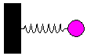

|
This is the simulation of the motion of a mass m situated at the end of a spring of length l and negligible mass. The motion is restricted to the horizontal dimension. (We choose a coordinate system in the plane with origin at the fixed end of the spring and with the X axis along the direction of the spring). |
 |
We assume that the reaction of the spring to a displacement dx from the equilibrium point can be modeled using Hooke's Law, F(dx) = -k dx , where k is a constant which depends on the physical characteristics of the spring. Thus, applying Newton's Second Law, we obtain the following second-order ordinary differential equation:
where x is the horizontal position of the free end of the spring.
In the simulation we solve numerically this equation and visualize the results.